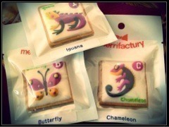

| 2012/11 05 Mon | 281回目*marika |
いつも読んでくださってる方
初めて読んでくださった方、
コメントしてくださった方、
ありがとうございます！
＼見てこれー
 ／
／
／

ママが買ってきてくれたクッキー！
いろんな種類があったみたいだけど、
ちょうちょ、イグアナ、カメレオン...
私がすきなのセレクトしてくれた

かわいすぎて食べたくない。

最近ひなちまがすごいのー
大人なオーラが出ておる。
色気付いてきてメンバーみんな
きゅんきゅんなのー
 きゃー
きゃー
きゃー
...いいなぁいいなぁ。
いやいや、このままじゃ...
ダメでしょ！
ということなので、今頑張っている。
＼目指せー大人ー！／
...白い目に見るなぁ
 ！
！
！
私にはわかるんだぞー
真剣だもん！応援してねーっ

......
今日はMJの収録で
4th表題曲を初披露しました！
タイトルは......
「制服のマネキン」!!!
クイズには正解したかな
 ？
？
？
今回は選抜だけでなく、
アンダーもバックダンサーとして
表題曲を盛り上げます！
乃木坂46が踊りまくる

キレかっこいいです。
アンダー曲もお楽しみに♪
食べるさゆにゃんをひたすらいじる。
では明日も頑張りまりか♪
まりか
コメント(226)
2012/11/05 22:48